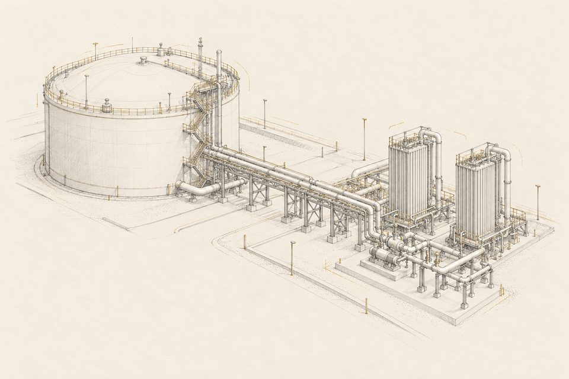
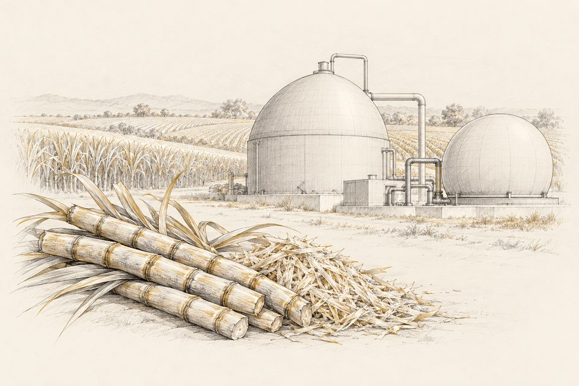
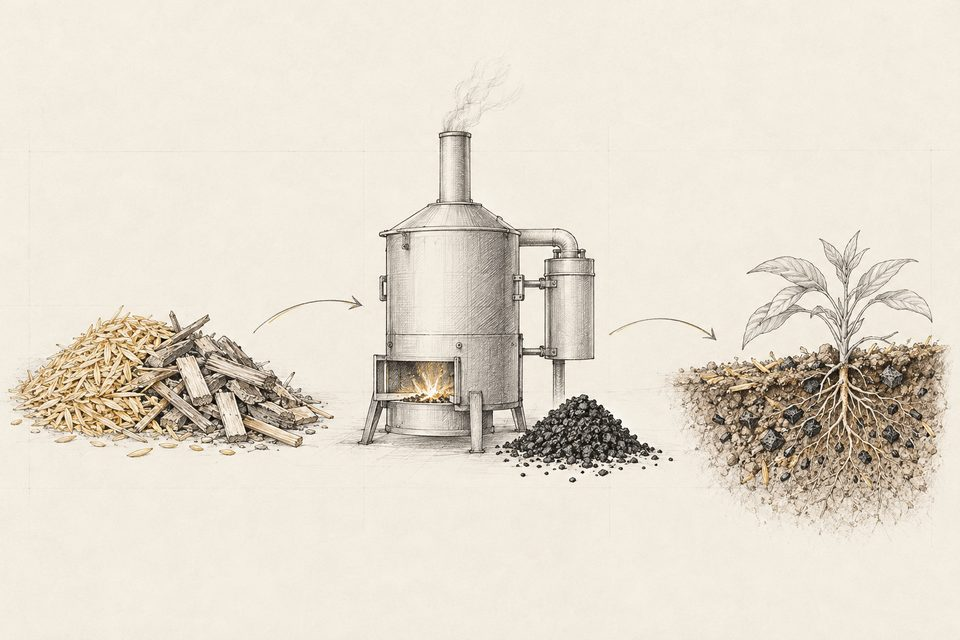
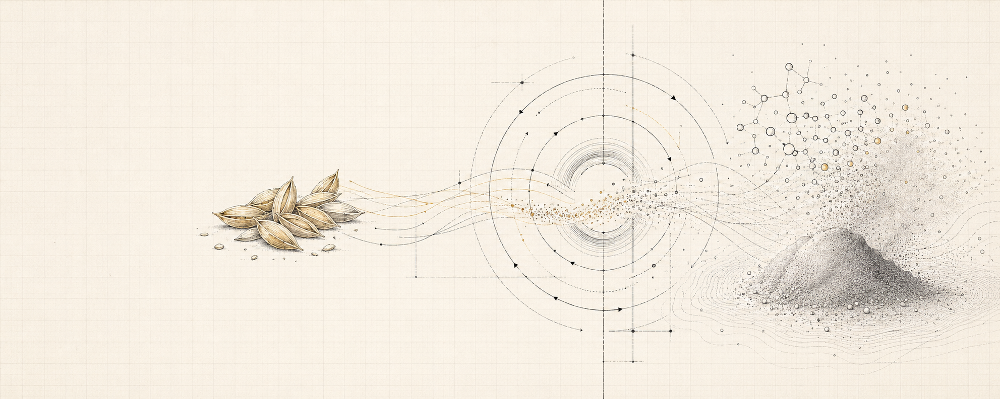

ガス・液化ガス設備
LNG受入基地の機器設計、熱量調整設備、BOG処理などの設計・試運転に携わってきた領域です。低温設備と回転機を含むプラント全体の成立性を見ます。
ENERGY PROJECTS / TECHNICAL ADVISORY
プラントの機械設計・建設・試運転に携わってきた技術者が、発注者の側に立って支援します。
構想の整理から事業性の評価、設備の立ち上げまで、必要な局面だけでもご相談いただけます。
図面・見積・工程・事業計画を横断し、次の意思決定に必要な論点を可視化します。
エネルギー設備を伴うプロジェクトを対象に、構想・検証・事業化・実行を一続きで支援します。必要な局面だけのスポット支援にも対応します。

成立条件と課題を整理

検証方法と判断条件を設計

テクニカルDD・見積診断

設計・調達・建設を横断

試運転から運用定着まで
事業会社
新規参入企業
技術系スタートアップ
金融機関・投資ファンド
自治体
EPC発注を控える事業者の皆様には、発注者側に立つ技術支援（オーナーズエンジニアリング）として、設計図書のレビュー、見積の妥当性診断、進行管理、立会検査を個別に提供しています。
オーナーズエンジニアリング（発注者側支援）を見る →土台にあるのは、LNG受入基地の設計・試運転で培ったガス系プラントの機械技術です。この技術は、扱う燃料が変わっても共通して使えます。

LNG受入基地の機器設計、熱量調整設備、BOG処理などの設計・試運転に携わってきた領域です。低温設備と回転機を含むプラント全体の成立性を見ます。

バイオエタノール、バガス発電、有機性廃棄物のバイオガス化などについて、事業化調査と技術評価を行っています。

バイオ炭の製造とカーボンクレジット組成、農業残渣からの素材化など、副生物を資源として扱う事業の組み立てを支援します。
守秘義務のため、お客様名と数値は掲載していません。進行中の案件は、現在の段階をそのまま記載しています。
上記のほか、エネルギー事業者向けの技術支援を業務委託として受託しています。案件の性質上、内容は公開していません。
代表に加え、案件に応じて招集する大手エンジニアリング会社出身のシニアエキスパートネットワーク。案件ごとに必要な専門性を組み合わせます。
大手エンジニアリング企業でプラントの機械設計、リードエンジニア、エンジニアリングマネージャーに約13年従事。事業者側では新規燃料開発と商用プラントのFSを経験。
大手エンジニアリング企業の研究所出身。技術原理、評価データ、スケールアップ上の論点を整理し、検証計画と技術評価を支援。
大手エンジニアリング企業出身。プロセス設計、物質・熱収支、設備構成の観点から、計画の成立性と技術リスクを精査。
大手エンジニアリング企業出身。構想・事業性検討から関係者調整、実行計画まで、プロジェクトを前に進める実務を支援。
技術として成立するか。事業として実行できるか。両方の視点から論点を整理し、意思決定と実行を支えます。
ヒアリング
資料レビュー
壁打ち
レポート作成
方針決定
PMO・立ち上げ
支援するだけでなく、自社でも研究開発を進めています。進捗を過大に見せず、現在地と次の検証項目を公開します。

農業残渣であるもみ殻からシリカを取り出し、用途を探索しています。現在はラボ検証に着手する前の準備段階です。
もみ殻由来シリカの現在地を見る →少数精鋭のチームで、案件ごとの技術課題に深く向き合います。